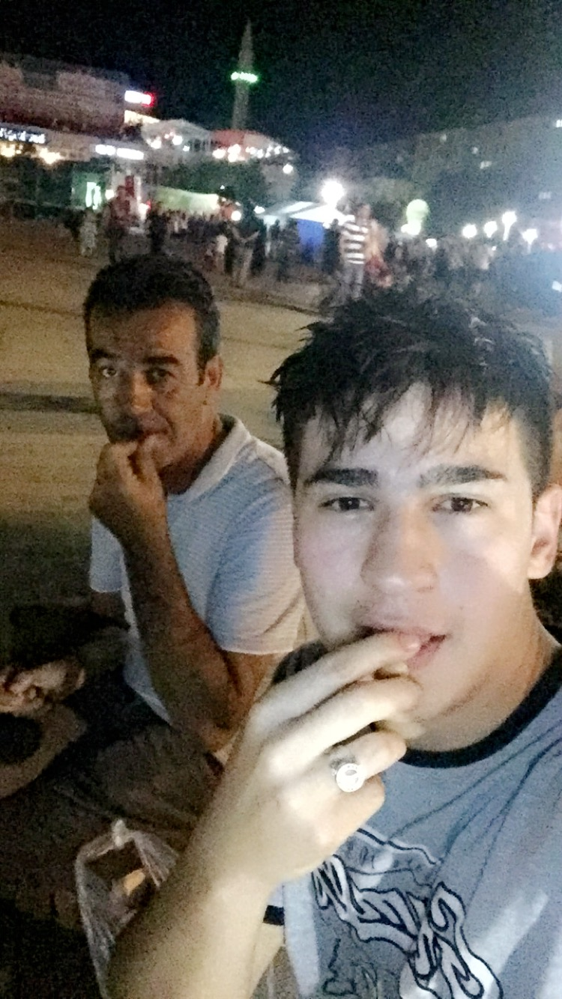

Naam: Erdem Erciyas
Leeftijd: 20 jaar
Woonplaats: Gorinchem
Ik ben Erdem,
ik ben een jongen die van hard werken houdt. Ik heb een Turkse achtergrond. Ook heb ik 3 broers die samen met mij in huis wonen samen met mijn vader. Buiten school doe ik aan voetbal 3 keer in de week bij Unitas wat ik erg leuk vind. Ik heb een auto rijbewijs (B), zelf heb ik nog geen auto maar gelukkig mag ik die van me vader rijden. Ook vind ik het leuk om met vrienden samen te stappen. Kortom ben ik een erg druk persoon maar heb veel plezier in wat ik doe. Ik hoop nu deze opleiding te kunnen afronden en hierna eventueel naar het hbo kan gaan in dezelfde richting. De vaardigheden waar ik over beschik zijn: goed individueel en ook samenwerken, stressbestendig, sociaal, concentratievermogen en ik kan goed problemen oplossen.
Ik heb mijn VMBO Theoretische Leerweg in Dordrecht behaald, ook heb ik de opleiding Facilitair medewerker afgerond in 2 jaar op het Da Vinci College in Dordrecht. Op dit moment ben ik begonnen met de opleiding Applicatieontwikkelaar waar ik erg enthousiast over ben. De opleiding duurt 3 jaar en hoop dan de opleiding afgerond te hebben.
Mijn eerste baan was bij de Albert Heijn in Gorinchem als vakkenvuller en heb dit werk 2 jaar gedaan. Hierna heb ik parttime bij een kaasfabriek in Leerdam gewerkt. De werkzaamheden die ik daar moest uitvoeren waren, kaas inpakken, dozen in de machines stoppen zodat de kaas erin kan. Nu werk ik 2 keer in de week bij een transportbedrijf genaamd GLS te Sliedrecht dit doe ik nu ongeveer een half jaar met plezier.
